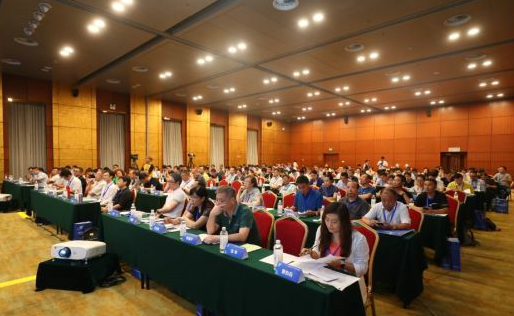

绿色建筑与城市环境国际研究中心
International Research Center for
G
reen
B
uildings &
U
rban
E
nvironment
当前位置：首页 > 学术动态
郜志副教授受邀参加中国环境科学学会室内环境与健康分会青委会论坛
发布时间：2019年07月24日
中国环境科学学会室内环境与健康分会青委会论坛暨苏州市洁净产业协会暑期论坛于7月24日在苏州召开，我中心郜志副教授受邀参加。
此次会议主要围绕洁净室技术及装备研发展开，主办方为中国环境科学学会室内环境与健康分会，由南京工业大学、苏州市洁净产业协会、 国家空气净化产品及气体检测仪器质量监督检验中心(江苏) 承办。

经过简单的开幕仪式后，会议正式开始。前半部分是洁净技术主题报告，期间由武汉大学的赵福云教授发表洁净室气流组织多态解特性、反演优化设计与高性能计算报告， 同济大学的高乃平教授发表CFD模拟在洁净室和高效过滤单元领域的应用报告， 南京工业大学的周斌副教授发表洁净手术室开门行为对手术室环境的影响报告。
郜志副教授发表杀虫剂对室内空气质量及人体健康的影响（待完善）。
后半部分是洁净装备主题报告，期间由北京航空航天大学的陈龙飞副教授发表宽温纳米颗粒计数仪器研制及应用报告， 南京工业大学的李斐副教授发表建筑环境安全与人员行为识别报告，苏州市计量测试院的厉龙高工发表洁净室用化学过滤器检测研究报告，大连理工大学的吕阳副教授发表集中式空调系统微波灭菌技术研究报告。 之后所有参加人员还一起参观了国家空气净化产品及气体检测仪质量监督检验中心的实验室，在主办方准备的自由时间中，大家一起交流互动，洽谈合作意向，在所有人的配合努力下此次论坛活动圆满结束。
@Copyright2019 南京大学绿色建筑与城市环境国际研究中心 地址:江苏省南京市汉口路22号南京大学鼓楼校区
友情链接： 南京大学； 南京大学研究生院； 南京大学建筑与城市规划学院